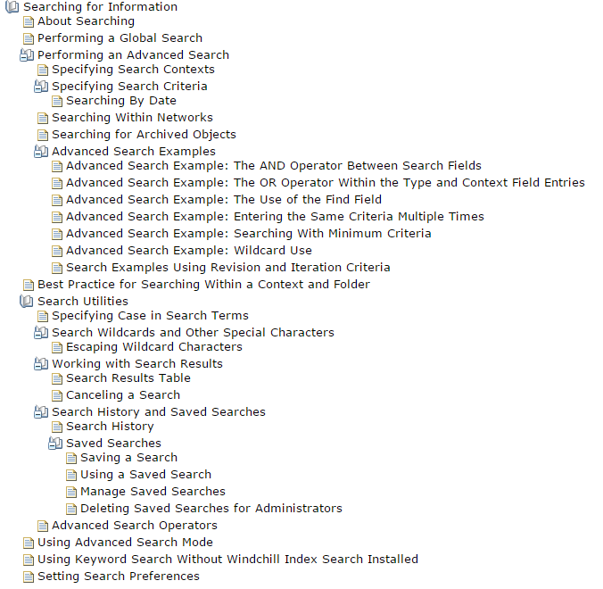
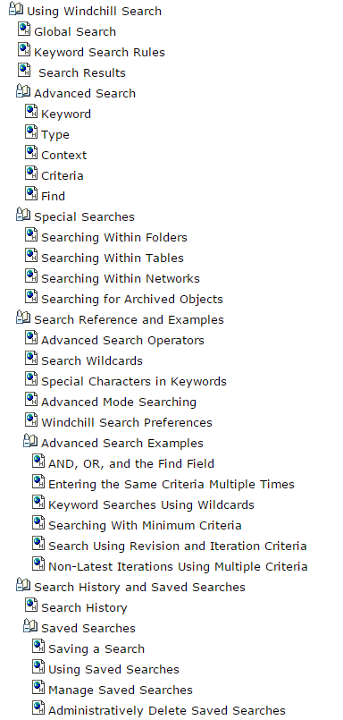
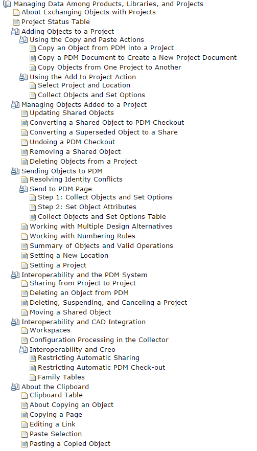
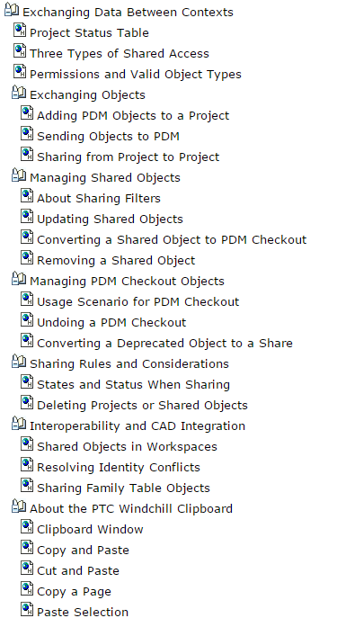

Technical documentation is typically pieced together over the years by various authors and editors. As a result, we're often left with a disorganized content structure.
One of the first things I do when assuming responsibility for new content is to evaluate its TOC and determine what I can do to make it easier to navigate.
Before

After

Before

After
